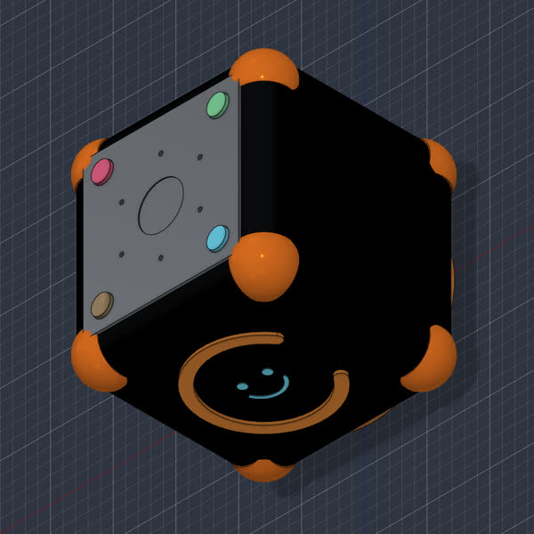
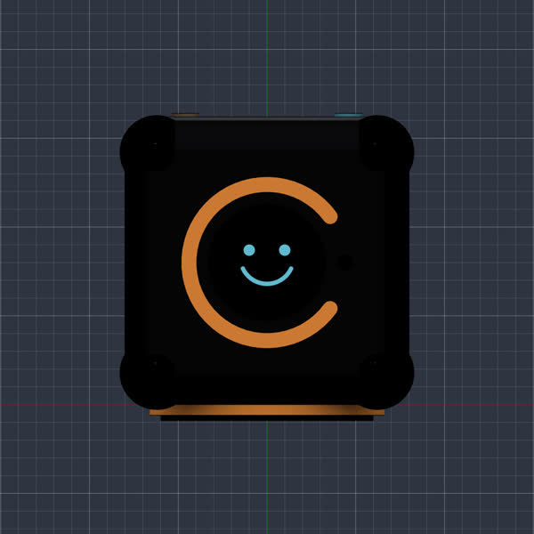
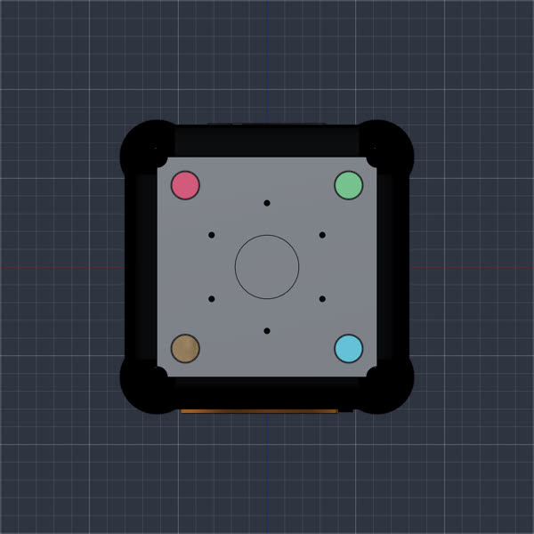

A C-kocka egy tenyérnyi asztali AI-asszisztens: hozzá lehet szólni, mindig jókedvű, és a világító C betű meg a kis kijelzőn mosolygó arca mutatja, mit csinál éppen. Ha pedig rossz napod van, el is dobhatod.
Az egészet – az ötlettől a 3D modellen és a videón át ezen a weboldalig – egy mesterséges intelligenciával együtt csináltam, pár nap alatt.
Húzd a kockát a forgatáshoz · a szeme követi az egeret 👀
A videó
2:56 a C-kockáról: hogyan ébred, mit tud, és hogyan készült. A videó is kódból készült – a 3D jelenet, a zene és a hangeffektek is. A videó angol nyelvű (angolul a termék neve C-Cube), a narrációt helyi AI-hangmodell (XTTS-v2) mondja.
Bónusz: „japán reklám” 🇯🇵
31 másodperc a műfaj stílusában: gyors vágások, napsugaras hátterek, óriási feliratok, taiko-dob és „PRICELESS!”. Japán narráció (helyi AI-hang), angol felirattal – a zene és minden hanghatás kódból készült.
Mit tud?
Három csoportban: szórakoztat, segít, vigyáz rád.
🎉 Szórakoztat
Party mód – zenére a C és az alsó RGB fénygyűrű a ritmusra villog.
Andor, a favicc-gomb 🌳 – fa borítású gomb, ami csak faviccet mond. Ba-dum-tss!
A leskelődő kocka – néha titokban rád néz. Ha visszanézel, gyorsan elkapja a tekintetét.
Stresszlabda mód – dobható! A narancs gumi sarkok miatt kibírja, utána szédül egy kicsit.
Shake to Decide – tegyél fel egy igen–nem kérdést, rázd meg, és a kijelzőn megjelenik: YES vagy NO.
Autodesk Fusion 360-ban készült – de nem egérrel rajzolva: az AI írt egy Python szkriptet, ami lépésről lépésre felépíti a modellt. Az első, 51 lépéses koncepcióból egy gyártható, kb. 50 alkatrészes modell lett, ütközés- és szerelhetőség-vizsgálattal.
Ház
9 × 9 × 9 cm, SLS-nyomtatott PA12, 9 mm-es lekerekítés, matt grafit; alul kettéosztva (a belső szán alulról tolható be)
Előlap
Ø 33 mm-es kerek LCD kijelző, körülötte világító RGB „C”
Kamera
a C nyílásában, adatvédelmi jelzőfénnyel
Tető
72 × 72 mm-es eloxált alumínium lap, 2 mikrofon, Ø18 mm-es érintőfelület, 4 programozható gomb (egyik fából: Andor)
Oldalak
rácsok: az egyik mögött a hangszóró, a másik szellőző
Hátlap
USB-C töltőcsatlakozó
Sarkok
8 narancs gumi „ütköző” – ezért dobható
Alja
RGB fénygyűrű az asztalra vetülő fénnyel, 4 gumiláb
Belül
Raspberry Pi Zero 2 W (Wi-Fi + Bluetooth), ReSpeaker hangpanel (2 mikrofon, hangszóró-erősítő), 18650 akku, XIAO RP2040, mozgásérzékelő, rezgőmotor – kész modulokból

Fusion – izometrikus

Elöl: kijelző és C

Felül: gombok, mikrofonokHátul: USB-C
Így épül fel a szkript futása közben (a Fusion idővonalát az AI léptette végig, és minden lépésről képet mentett)
Hogyan készült?
A kihívás lényege nem csak az eredmény volt, hanem az, hogyan tanulok meg valami újat egy AI segítségével. Az eszközöm a Claude Code volt.
1 · Ötlet
„kaptam egy feladatot, ahhoz kellene segítség … van valami jó ötleted?”
Négy témajavaslatból a C-kocka nyert: illik az AI témához, és elég egyszerű a formája.
2 · Koncepció és ötletelés
„esetleg van vmi ötleted még … ha lenne rajta egy kis LCD kijelző …”
Közös brainstorming: én hoztam a poénokat (dobálható stresszlabda, favicc-gomb, leskelődés, kamera), az AI továbbgondolta őket működő funkcióvá.
3 · 3D modell kódból
„Ezen a gépen van fusion360, ha esetleg tudod kezelni.”
Az AI egy Fusion 360 Python szkriptet írt, ami felépíti a teljes modellt.
4 · Ellenőrzés a Fusion MCP-vel
„fusion360hoz sincs mcp? nézz utána kérlek alaposan”
Kiderült, hogy az Autodesknek van hivatalos, beépített MCP szervere. Ezzel az AI maga futtatott szkriptet, képeket készített, hibát talált és javított.
5 · Videó – szintén kódból
„akkor lets goo, generáld a videót”
Animált three.js jelenet élő arccal, Windows gépi hangok, saját szintetizált zene és hangeffektek, ffmpeg-gel összefűzve.
6 · Ez a weboldal
Interaktív 3D kocka, videó, a történet – és GitHub Pages-en bárki megnyithatja.
Ahol elakadtam – és hogyan jutottunk túl rajta
A szkriptmenü nem jött elő
A Fusion a kezdőoldalon nyílik meg – ott nincs Shift+S. Előbb meg kell nyitni egy tervet.
Hiányzott a hangszórórács
A Fusion a lap éleit is a vázlatba tette, így az egész oldal besüllyedt. Megoldás: él nélküli vázlat, csak a kis profilok kivágása.
„Nincs Fusion MCP”
Az első keresés túl szűk volt. Rákérdeztem, alaposabb keresés: van hivatalos!
Régi Node.js
A gépen Node 14 van – a modern csomagok nem mentek, ezért az AI saját, egyszerű megoldásokat írt.
Robotos hang
A természetes hangokhoz Azure-kulcs kellett volna, de a céges bejelentkezésen elakadtam – maradt a finomított gépi hang.
Biztonság
Ugyanebben a Fusionben CAM-ezek a munkához – az AI minden lépés előtt ellenőrizte, hogy a C-kocka dokumentum aktív-e.